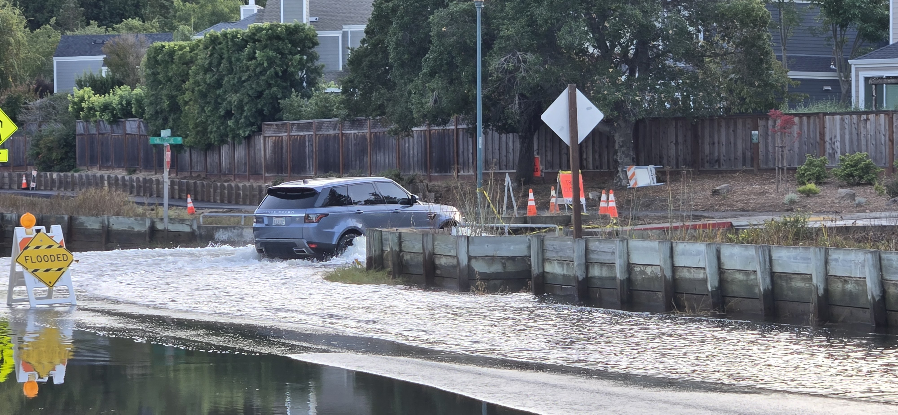

Larkspur WET
Weather • Event • Tide & FloodWatch
SMALL CAR IMPASSABLE
Larkspur Plaza Dr
Crosswalk Sag Impassable for Small Cars
Water over the crosswalk dip exceeds 5.9 inches ground clearance. Road impassable for small cars and low-clearance sedans.
7.51 ft NAVD88
Station 9414874: 7.45' MLLW
+1.38 ft
Golden Gate Observed vs Ast
+2.4 in water
Lowest dip crown (Full clear: 6.95')
5.9 in clr
Travel lane dry
⏱️ 48-Hour Tide Scrubber (Centered on Live Now)
LIVE: --:--
-24h Past
-12h
📍 LIVE NOW
+12h
+24h Forecast
🚗 Road Cross-Section & Small Car Clearance Simulator
TWL: 7.73 ft
View:
📈 48-Hour Tide & Surge Forecast (Larkspur #9414874)
NOAA Live
📸 Oct 30 Ground-Truth Photo Calibration
Andy's Field Sequence

11:42 AM • Road Dry (3.2')

1:04 PM • Gutter Seep (6.70')

1:33 PM • Gutters Wet (7.05')

2:43 PM • Impassable Sag (7.55')

4:53 PM • Sag Still Flooded (7.03')

5:12 PM • Gutters & Sag Wet (6.95')
7:34 PM • Gutters Flooded (Lag!)
📋 Calibrated Elevation Thresholds
| Feature / Benchmark | Elevation | Status / Impact |
|---|---|---|
| Street Gutter Inverts | 6.70 ft | Water begins seeping into curb gutters (1:04 PM) |
| Lowest Crown in Sag Dip | 6.95 ft | True All-Street Clearance (Road covered in salt water until < 6.95') |
| High Road Crown (Foreground) | 7.31 ft | High ridge exposed, but sag dip ahead remains submerged (4:53 PM photo) |
| Small Car Impassable (Sag) | 7.55 ft | Travel lane depth ≥ 5.9" (Ground truth: 2:43 PM) |
| Carport Stall #86 Floor (GL) | 7.75 ft | Concrete floor. Kept dry today (peak was 7.70 ft) |
| Carport Door Sill Damage Level | 8.46 ft | +8.5" above carport GL where water enters parked car interior |
| SUV / Truck Impassable | 7.85 ft | High clearance vehicles ≥ 9" ground clearance |